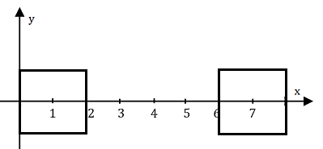

Trên mặt biển có n hòn đảo. Có thể xem mặt biển là một mặt phẳng còn các hòn đảo là các điểm nằm tại các tọa độ (x1, y1), (x2, y2), ... , (xn, yn), nghĩa là đảo thứ i cách gốc tọa độ xi mét theo trục hoành, yi mét theo trục tung. Ban đầu mỗi hòn đảo là một hình vuông có chiều dài cạnh là 2 mét (tâm hình vuông là tọa độ các hòn đảo). Sau đó mỗi tháng tùy theo lượng phù sa nhiều hay ít mà mỗi hòn đảo được bồi đắp mở rộng cả bốn hướng mỗi hướng thêm 1 mét (phù sa ít) hay 2 mét (phù sa nhiều) để tạo thành hình vuông lớn hơn. Trong một tháng các hòn đảo đều được bồi đắp giống nhau (cùng 1 mét hoặc cùng 2 mét).

Giả sử nếu quá trình bồi đắp xảy ra trong k tháng, bạn hãy tính xem có sự va chạm giữa các hòn đảo hay không (ít nhất 2 đảo chạm nhau) và sự va chạm đó xảy ra vào tháng nào.
(Nếu sau một tháng nào đó, cạnh hai đảo chỉ mới chạm mép vào nhau, hoặc 2 đỉnh chạm nhau thì cũng xem như tháng đó xảy ra sự va chạm, xem thêm ví dụ)
Dữ liệu vào: gồm các dòng sau:
- Dòng thứ nhất gồm 2 số nguyên n, k là số hòn đảo và số tháng bồi đắp, hai số cách nhau một khoảng trắng (2 ≤ n ≤ 200, 1 ≤ k ≤ 100.000).
- Trong n dòng tiếp theo, tại dòng thứ i gồm 2 số xi và yi là tọa độ các hòn đảo, hai số cách nhau một khoảng trắng (-109 ≤ xi, yi ≤ 109).
- Trong dòng tiếp theo là một dãy k ký tự ứng với k tháng bồi đắp, nếu đó là ký tự '1 ' thì tháng đó mở rộng 1 mét, nếu đó là ký tự '2 ' thì tháng đó mở rộng 2 mét, ngoài ra không có ký tự khác.
Dữ liệu xuất:
- Nếu sau k tháng không có 2 đảo nào chạm nhau, in ra -1.
- Nếu có đảo chạm nhau, in ra số nguyên là tháng mà sau khi bồi đắp thì bắt đầu xảy ra va chạm.